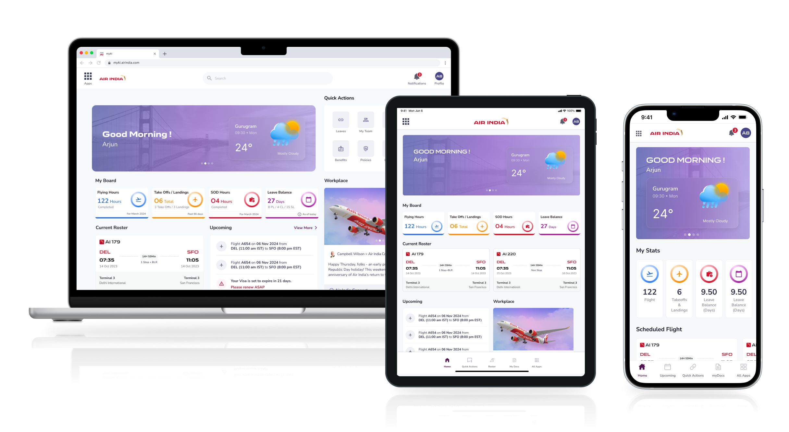
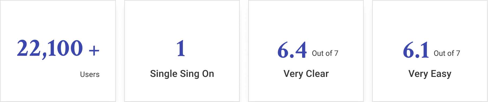
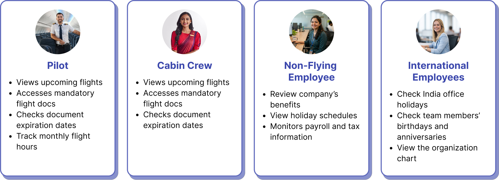
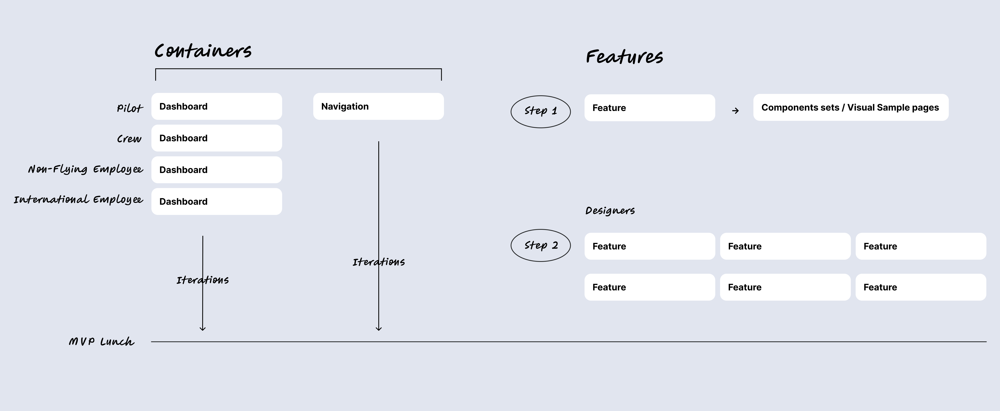
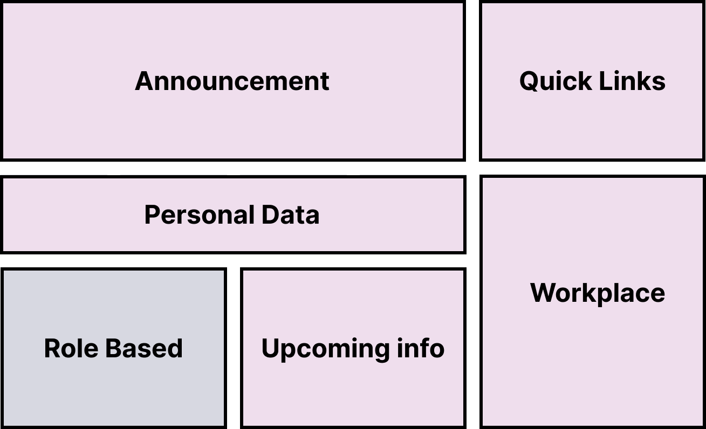
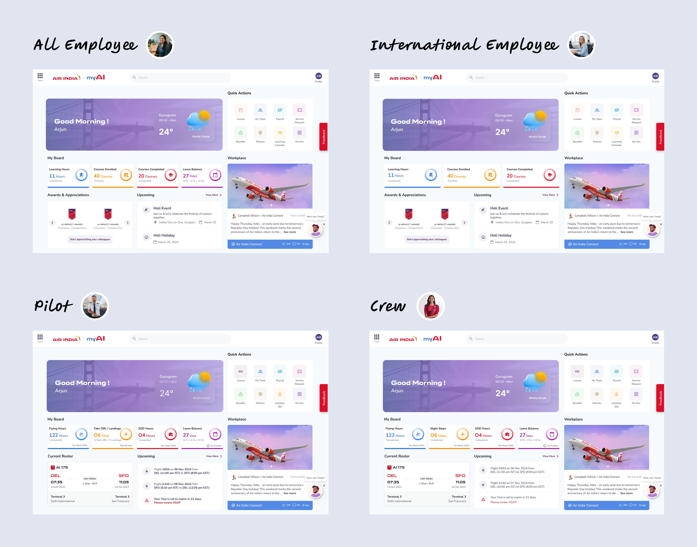
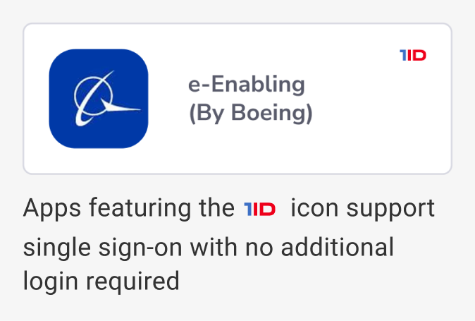
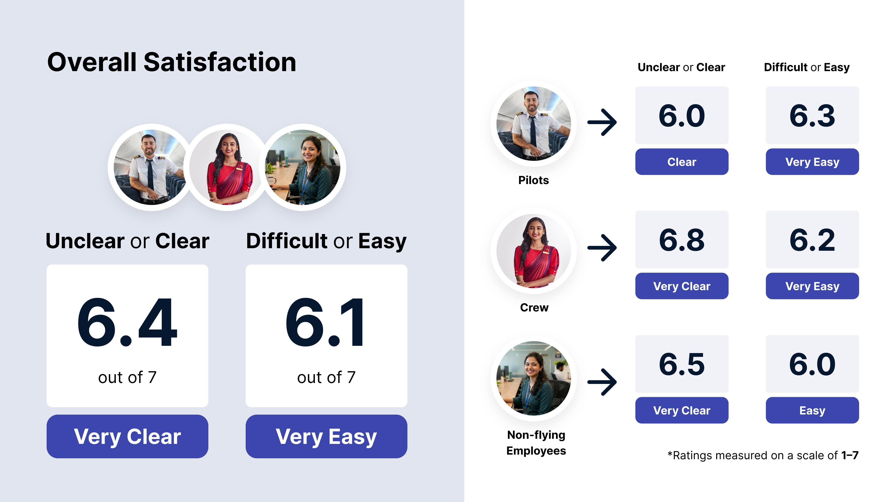

Enterprise Tools
Unified portal for the 22,100+ employees for everyday work tools.

Unified portal for the 22,100+ employees for everyday work tools.

This product is a unified portal built as a 0-to-1 project to make daily work life easier for 22,100+ employees. Across the entire company, there are over 156 different internal tools and employees had to juggle multiple disconnected platforms and separate logins just to do their jobs. We brought that fragmented experience under a single sign-on (SSO) roof. The MVP is just the start, our long-term plan is to bring these tools and features together through a phased rollout, gradually centralizing everything into one home.
YEAR
2023-2024, 6 month
(Design + Development)
ROLE
Sub lead, UX/UI
TEAM
Design: 1 Director, 4 designers
Product: 4 Product Managers
Engineering: 15 + Engineers
TOOLS
Figma, Jira

Multiple disconnected platforms for daily tasks, leading to several friction points
Fragmented Access
Users had to remember unique login credentials for every tool.
Lack of Centralization
There was no single system to track important action items or company alerts.
Remove fragmentation by implementing a Single Sign-On (SSO) feature and integrating core products to centralize information into a single ecosystem
Grouping 22,100+ employees into 4 distinct personas
Initially, we identified three personas: Pilot & Crew, Non-flying Employees, and Managers. We have since refined these into four distinct categories for the following reasons:

We used a decoupled design process to build the core architecture and features simultaneously
We first established the global "containers"—the Dashboard and Navigation systems to house the user experience:
While the architecture was being refined, we followed a two-step process to build the portal’s functionality:

One Layout for all the personas dashboard
After multiple iterations, we developed a single, scalable layout that applies to all persona dashboards to minimize long-term maintenance.


To optimize the navigation experience, three key features were integrated into the final design:
One Single Sign On to access over 156 products
Users log in with their email and password to access their role-specific products.

14 features launched in the MVP
These are some of the features that I worked on
Efficiently manage employees’ leave requests, track available balances, and stay informed about upcoming holidays
*Non-flying employees onlyUsers can view their requested leave in both calendar and list formats.
Apply leave flow: Users can edit or update their submitted requests as long as they remain in a pending state.
A centralized platform to access essential team information, including the organizational chart, team birthdays, and leave schedules, fostering transparency, collaboration, and a sense of community.
*Non-flying employees onlyWe created small components set and guide

15 participants tested across 3 key personas to validate task completion and efficiency

Pivoting quickly to keep the project moving forward instead of holding onto designs that no longer fit technical or project requirements
By coordinating handoffs with the India team, we kept the project moving while the US team was offline, effectively our daily progress
Scaling our impact by knowing when to speak up. Asking for help allowed us to complete critical user research in just one week